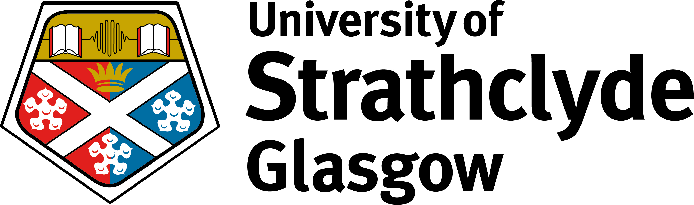

| Home | Call for Papers | Registration | Travel Guide |
|
|
 |
The workshop is co-hosted by the University of Strathclyde and the the USC Election Cybersecurity Initiative at the University of Southern California. It will take place on June 27, 2023 in the Technology & Innovation Centre, George Street, Glasgow, Scotland.
The USC Election Cybersecurity Initiative is a new, non-partisan independent project at USC, supported by Google. It primarily aims to help protect campaigns and elections from digital and cyber threats.
To this end, it has organised events in all 50 US states, as well as in Greece. These events are targeted toward people in and around campaigns and elections, including but not limited to: academia, policymakers, election officials, candidates, and IT professionals. The events are also open to concerned citizens. These events bring together academics and practitioners to share expertise on identifying and countering such threats.
This event at Strathclyde offers an opportunity to extend this approach, providing an opportunity for mutual learning between academics and practitioners in the UK, the USA and the EU.
The event’s primary objective would be raising awareness of the global and national cyber-security challenges, including in the UK and Scotland, and the technological contribution to meeting these challenges. We aim to integrate a range of disciplines in deep and meaningful ways, including the technological and science fields, social media, social science, and public policy.
It could form a platform for further discussion between our Strathclyde and USC colleagues who are interested in research and educational opportunities in two areas:
Importantly, the Initiative seeks to promote research at the intersection of technology and public policy, providing an opportunity to bring the academics more closely together to explore future engagement.
The event will bring together academics from a variety of disciplines. Computer Science and Engineering are needed to understand the technological threat related to recent developments in communication and computing, including social media and artificial intelligence. Mitigations for these threats encompass both policy and technical means. We must consider the manifestation of these technological threats through society, including their impact on public opinion, consensus, electoral institutions, procedures, and campaigns, and more generally on government institutions. This requires input by specialists in elections and political behaviour. Understanding the strategic intentions of adversaries is also important, requiring participation by those focused on international relations and security.
Below we include lists of potential academic panelists, potential speakers (mostly practitioners) and organisations to invite.
| 9.00-9.30 | Registration |
| 9.30-10.00 | Building Trust in Uncertain Times Conversations with Sir Jim McDonald and Max Nikias; Moderator: Adam Powell III. |
| 10.0-10.30 | Public Engagement and Digital Literacy Interventions: Lessons from USC’s Election Cybersecurity Initiative. Speaker: Adam Powell III. |
| 10.30-10:45 | Coffee |
| 10.45-11.45 | Panel 1 – Converging Engineering, Social Science, and Public Policy: Interdisciplinary strategies towards combatting threats to democracy. Speakers include: Professor Clifford Neuman (USC); Professor Scott Cunningham (Strathclyde) Moderator: Professor Anthony McGann. |
| 11.45-12.30 | Defending Democracy: a UK NCSC perspective. Representative of National Cyber Security Centre. |
| 12.30-1.15 | Securing Election Systems and National Security: Lessons from recent elections. Brandon Valeriano. Marine Corps University |
| 1.15-2.15 | Buffet Lunch |
| 2.15-3.15 | Panel 2 – Social Media, Emerging Technologies and Public Policy: Benefits and challenges. Speakers include: Professor Sarah Mojarad (USC); Dr Narisong Huhe (Strathclyde); Merrill Warkentin (Mississippi State University); Dr Zachary Greene (University of Strathclyde). Moderator: Professor Scott Cunningham (University of Strathclyde). |
| 3.15-3.30 | Coffee |
| 3.30-4.30 | Panel 3 – The Future of Democracy: Finding the public purpose in a digital age. Speakers include: Professor Dr W. Paul Cockshott (University of Glasgow); Professor Anthony McGann (Strathclyde); Merrill Warkentin (Mississippi State University). Moderator: Dr Zachary Greene. |
| 4.30-5.00 | Concluding remarks. |
There will also be a poster session during the lunch break, with posters presenting work on democracy and cyber-security, as well as a visual exhibition of “images of democracy”. Please check the submission page for more details.
General Chairs
Professor C. L. Max Nikias, President Emeritus, University of Southern California
Adam Clayton Powell III, University of Southern California
Anthony McGann, University of Strathclyde
Karen Renaud, University of Strathclyde
For general questions about the workshop, please contact Anthony McGann (anthony.mcgann@strath.ac.uk).